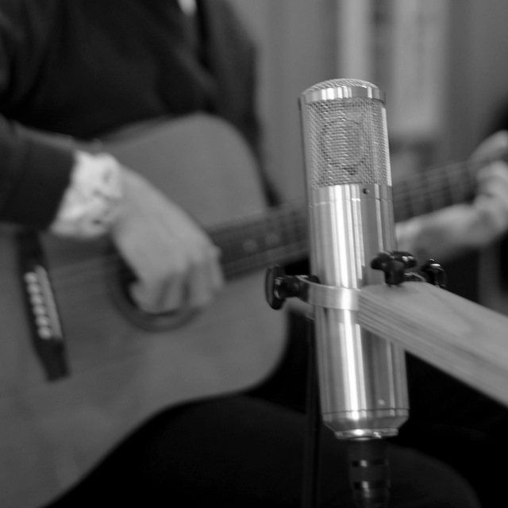

## TimeBird Music

[TimeBird Music](http://timebirdmusic.com/) operated jointly with [Daniel Deboy](http://danieldeboy.de/) is a part of the larger [Sandhaus Studios](http://www.sandhausstudios.com/) complex in Sandhausen, near Heidelberg, Germany.



<p style="font-size: 8pt">Photo &copy; of <a href="http://timebirdmusic.com/">timebirdmusic.com</a></p>

The studio consists of two rooms equipped for audio recording and post-processing (mixing, mastering, and arrangements), respectively.
The former features adaptable acoustics which can be tuned for each particular artist or type of performance.
It is perfect for vocals or solo instrument recordings, e.g., drums (we provide two sets!), guitars, brass or wind, as well as chamber ensembles and small bands.
The latter provides quality equipment for turning recorded audio into a final product, such as a Euphonix Artist Series workstation, 5.1 Emes Black & Amber surround system, and top music software (Pro Tools 11, Logic 9, etc.). Check out the full list at the [studio's site](http://timebirdmusic.com/).

It is totally possible to use facilities of [Sandhaus Studios](http://www.sandhausstudios.com/) for recording large performances. Talk to us for details!
